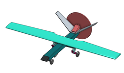
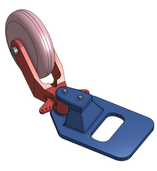
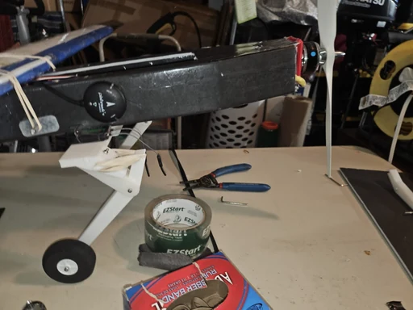

Autonomous survey aircraft
Successive fixed-wing UAV builds · Independent design and flight testing


The project, briefly.
I designed and fabricated successive fixed-wing airframes for autonomous waypoint-based survey missions, including landing gear and electronics mounts. I also integrated the avionics and powertrain, configured Pixhawk/PX4, and tuned the aircraft through field testing.
The builds evolved from a foamboard V-tail aircraft to a conventional-tail layout with revised ground handling, then a carbon-reinforced flying wing. Flight observations guided changes to control authority, propeller clearance, and construction.
Airframes, mechanisms, and fabrication.




Development notes
- Three configurations are documented here; the fourth design listed in my resume is not shown.
- Measured performance comparisons are not available; endurance, speed, span, and efficiency figures are omitted.